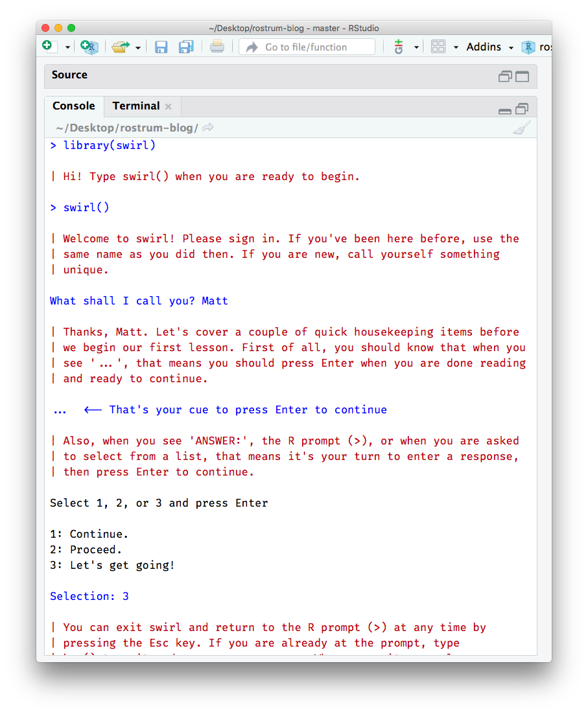
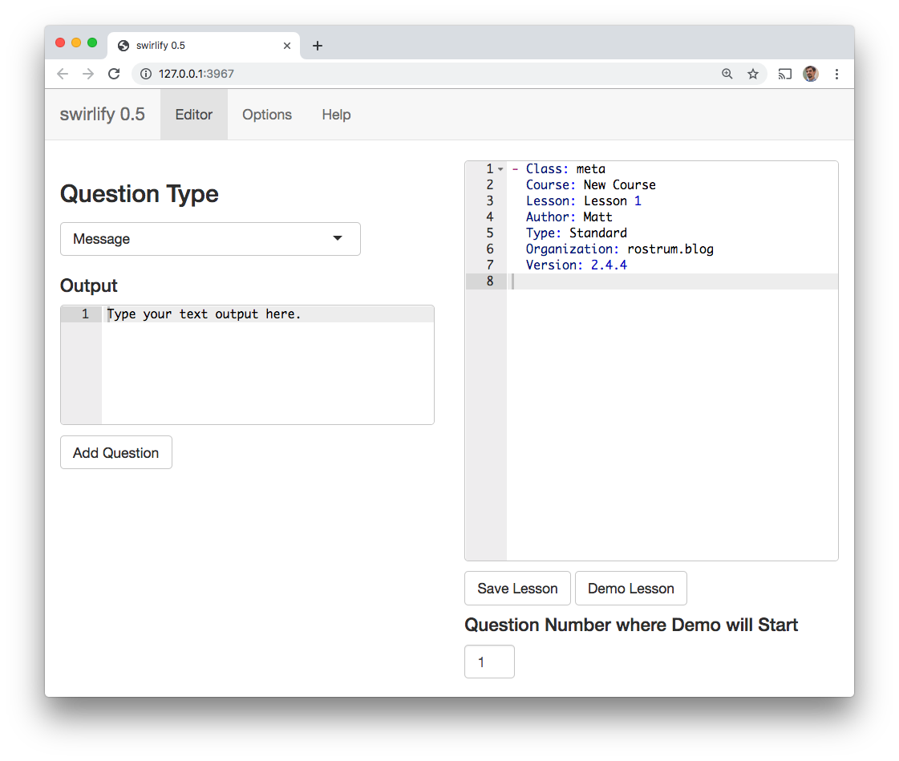
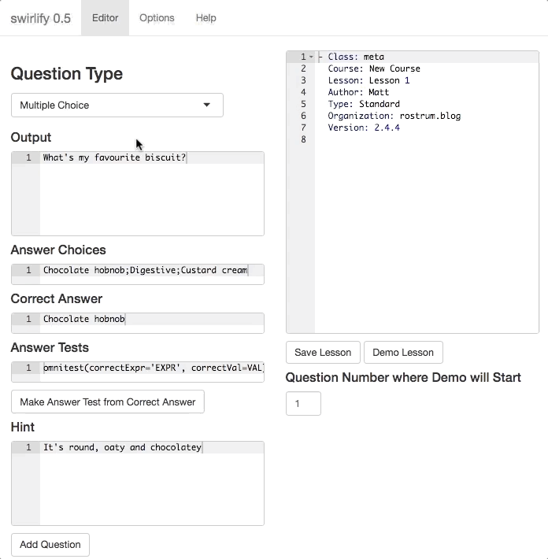

install.packages("swirl")
library(swirl)
swirl()
tl;dr
Teach people to teach other people. That seems an efficient way to maximise impact.
- {swirl} lets people learn R from within R
- {swirlify} is a package to help write Swirl courses
- This post explains how to start a Swirl course with Swirlify
- For example, I’ve begun Tidyswirl for teaching tidyverse packages
Note
I never got around to fully developing Tidyswirl and so I archived the GitHub repo. You should take a look at swirl-tidy by Seo-young Silvia Kim instead.
Swirl
Swirl is a platform that:
teaches you R programming and data science interactively, at your own pace, and right in the R console!
Learning with Swirl is active and your understanding is checked throughout. You can move at your own pace and download additional courses to learn about new things. And it’s free.
Install and load Swirl to begin and then follow the instructions printed in the console.
Here’s what the first few lines of interaction with Swirl look like.

You’ll be given a list of courses to install, but you can also download them from elsewhere. This post is about how you can quickly create and distribute such a course.
Swirlify
Sean Kross and Nick Carchedi have created the {swirlify} package to make course creation easy. This post covers a simple workflow to get you started, but full Swirlify guidance is available.
Get up and running
Create a new lesson folder (‘Lesson 1’), which will be autopopulated with template files for your lesson. This will also create a new parent course folder (‘New Course’) if it doesn’t already exist.
library(swirl) # install.packages("swirl")
library(swirlify) # install.packages("swirlify")
new_lesson(course_name = "New Course", lesson_name = "Lesson 1")The following folder structure is generated:
Working directory/
└── New_Course/
└── Lesson_1/
├── customTests.R
├── dependson.txt
├── initLesson.R
└── lesson.yamlThe lesson.yaml file is the most important one. It’s basically a text file where each question is stored as text. Users advance through each of these questions when they run the lesson.
The lesson file can be edited directly, but we’ll focus on the built-in Swirlify Shiny app for simplicity:
swirlify(course_name = "New Course", lesson_name = "Lesson 1")The app will open the named lesson from the named course in a new browser window. On the left is where you create new questions. On the right you can see the lesson.yaml file itself.

Note the ‘Help’ tab, which tells you about the types of questions you can make, or you can see the Swirlify guidance). Basically the question types are:
- ‘message’ for informational text (not for questions per se)
- ‘command’ for answers that require simple R expressions as answers
- ‘numerical’ and ‘text’ for answers that are numbers or words
- ‘multiple choice’ for multiple choice (as in the figure above)
- ‘figure’ and ‘video’ for referring to media (‘video’ can take a user to any URL)
- ‘script’ for longer R expressions that requires you to write custom answer tests (this is more advanced)
To build a question:
- Choose a question type from the dropdown menu on the left
- Fill in the text boxes (note that the answer tests box is completed for you if you type into the correct answer box and then press the ‘Make Answer Test from Correct Answer’ button)
- Click the ‘Add Question’ button see the question added to the file (on the right hand side)
- Click ‘Save Lesson’
- Run
test_lesson()to look for errors - Click ‘Demo Lesson’ to try it out

Continue adding questions until the lesson is complete. Then:
- Run
add_to_manifest()to add the lesson to theMANIFESTfile (it’ll be created in the course directory if it doesn’t already exist). Lessons in here are recognised as part of the course in the declared order. - Use
new_lesson()to create a new one, remembering to change thelesson_nameargument and also add this lesson to the MANIFEST as well.
You should end up with a folder structure like this:
Working directory/
└── New_Course/
├── Lesson_1/
| ├── customTests.R
| ├── dependson.txt
| ├── initLesson.R
| └── lesson.yaml
├─ Lesson_2/
| ├── customTests.R
| ├── dependson.txt
| ├── initLesson.R
| └── lesson.yaml
└─ MANIFESTWhen your lessons are completed, you’re ready to share your course. Jump now to the share your course section or first learn some extra knowledge about lesson file structure, correct answers or lesson startup below.
Extra knowledge
Clearly the process of course building is more nuanced than outlined above, but you can learn more from the documentation on the Swirlify site and reference manual. In particular, See the course structure and writing lessons pages of the Swirlify guidance.
I’ll touch on three things here: lesson file structure, correct answers and lesson start-up.
Lesson file structure
The lesson file is written in YAML, which is basically a special form of plain text. Questions appear as separate blocks of text that start with a hyphen and a question type (class) declaration, followed by further arguments on new indented lines.
The first block is always Class: meta and provides basic information about the file, like your name and the lesson name. Another simple one is Class: text to which you supply only one more argument, the Output, which is text to display to the user.
- Class: text
Output: Did I mention chocolate hobnobs are great?There are actually three ways to add questions:
- In the Shiny app, as outlined earlier in this post.
- By using the
wq_*()family of functions to add questions to the active lesson –wq_message(output = "Text here")adds informative text, for example. - By writing directly into the YAML file.
There’s more on questions classes and how to write them in the Swirlify guidance.
Correct answers
How are answers encoded and checked in lesson.yaml? Consider the YAML for this question:
- Class: cmd_question
Output: Use mean() to calculate the mean of the numbers 1 to 5.
CorrectAnswer: mean(1:5)
AnswerTests: omnitest(correctExpr='mean(1:5'))
Hint: Use the form x:y to provide numbers to mean().So CorrectAnswer is where you provide the correct answer (!). This line will be run if the user chooses to skip() the question. AnswerTests is, however, what the user’s input will actually be evaluated against. It uses the omnitest function to compare the correct expression (correctExpr) to the user’s answer.
But often there’s more than one way to answer. The any_of_exprs() function should be used in this case.
- Class: cmd_question
Output: Use mean() to calculate the mean of the numbers 1 to 5.
CorrectAnswer: mean(1:5)
AnswerTests: any_of_exprs('mean(1:5)', 'mean(c(1, 2, 3, 4, 5))')
Hint: You can use the form x:y or c(x, y) to provide numbers to mean().There’s more on answer testing in the Swirlify guidance, including how to write custom answer tests.
Lesson start-up
Anything in the initLesson.R file will be run when the lesson is loaded. You can create objects and refer to them in your questions. For example, you could add a data frame:
biscuits <- data.frame(
name = c("Chocolate hobnob", "Digestive", "Custard cream"),
rating = c(10, 5, 7)
)You could then ask in lesson.yaml something like:
- Class: cmd_question
Output: Use index notation to subset for biscuits rated over 5.
CorrectAnswer: biscuits[biscuits$rating > 5, ]
AnswerTests: omnitest(correctExpr='biscuits[, biscuits$rating > 5]')
Hint: Remember the indexing format dataframe[rows, columns].The data frame was loaded on start-up, so the user can interact with it to answer the question.
You can also add data sets to the lesson folder and read them into the user’s environment via the initLesson.R file. See the Swirlify guidance on including data for more information.
Plea
The R community is large and friendly. Swirl helps people learn. It would be great to see more courses being made. Consider making one to teach your colleagues about common R tasks in your department, for example.
Environment
Session info
Last rendered: 2023-08-01 19:49:01 BSTR version 4.3.1 (2023-06-16)
Platform: aarch64-apple-darwin20 (64-bit)
Running under: macOS Ventura 13.2.1
Matrix products: default
BLAS: /Library/Frameworks/R.framework/Versions/4.3-arm64/Resources/lib/libRblas.0.dylib
LAPACK: /Library/Frameworks/R.framework/Versions/4.3-arm64/Resources/lib/libRlapack.dylib; LAPACK version 3.11.0
locale:
[1] en_US.UTF-8/en_US.UTF-8/en_US.UTF-8/C/en_US.UTF-8/en_US.UTF-8
time zone: Europe/London
tzcode source: internal
attached base packages:
[1] stats graphics grDevices utils datasets methods base
loaded via a namespace (and not attached):
[1] htmlwidgets_1.6.2 compiler_4.3.1 fastmap_1.1.1 cli_3.6.1
[5] tools_4.3.1 htmltools_0.5.5 rstudioapi_0.15.0 yaml_2.3.7
[9] rmarkdown_2.23 knitr_1.43.1 jsonlite_1.8.7 xfun_0.39
[13] digest_0.6.33 rlang_1.1.1 fontawesome_0.5.1 evaluate_0.21 Reuse
CC BY-NC-SA 4.0